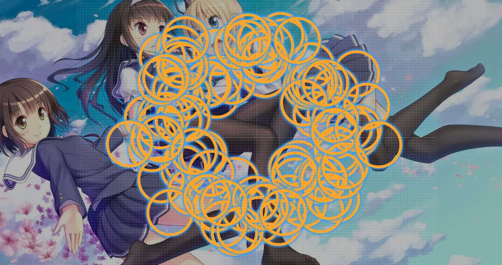

(This lesson is all about connecting the music and the map. The best way for me to match up musical concepts with visual concepts is through videos, so I'll steal a bunch of pishifat's because he has lots of good explanations and examples.)
So far, we have learned when to place circles, and when and where to place sliders.
Now, we'll take a closer look at how placement of objects can create relative emphasis, and how good flow strengthens that.
As a reminder, our target diff will be an Insane, maybe Hard. Once again, you'll probably want to start from an empty map.
Previously, we've discussed basic rhythmic emphasis, which mappers create via clicking and releasing. However, even though following the song's base rhythms makes a map playable and relates it to the song, it can make for some pretty awful gameplay.
One of the simplest ways to add rhythmic emphasis to an object is to place it at the end of a double, triple, or similar short stream. This can often end up being overmapping since the song won't always support such clicking, but that's okay since, as I said before, there are certain times when overmapping is good. Also note the difference between, say, a triple and a slider: A slider emphasizes its head, a short stream emphasizes its end.
We also have to take care to add these only when they'd be somewhat expected by the player. It's not generally a good idea, for example, to overmap random triples into a slow section, since this form of emphasis is used for intense segments.
Another common form of overmapping is adding objects to beats which don't have any important sounds, but which would otherwise be important beats. For example, a big white tick with no sound might get a circle or slider (head or end) simply because the player expects a sound there. TV Size maps do this especially often so that they have the simplest possible rhythms for the player to follow.
When the emphasized instrument doesn't have a sound on a strong beat (usually a white tick), we always have the option to add fill rhythms. Whether we actually do add something is based on if we, as a playtester, prefer the rhythms with or without it. Since songs often repeat themselves, we should then try to use similar fill rhythms elsewhere in the song to create consistency.
Anyway, here's Wonderwall pishifat:
And since this is a two-part video, here's pishifat again:
As a recap,
In addition, pishifat explained that a map with good flow doesn't need to (and usually shouldn't) be completely comfortable. Uncomfortable movement is a highly impactful way of emphasizing a song's strange sounds, since the player sees, hears, and feels the discomfort, all at the same time. If you're a big fan of wub maps, you'll recognize their patterning is largely based around this idea.
One source of discomfort that pishifat doesn't touch upon in these videos is that caused by cramped movement. Movement is naturally fun, so keeping (almost) still for more than one second feels... weird. That's not to say that it makes for bad mapping (for example, handsome uses it well in Sua Cara), but we should be careful when making cramped patterns, as they create a certain kind of discomfort emphasis.
On the other hand, we must be extremely careful to avoid discomfort that may emphasize parts of the song that should not be emphasized. Previously, I mentioned a slider shape that often randomly appears stops being special; emphasis that often randomly appears also stops being special.
Here's a weird trend: Almost every mapper will use "the big circle" and its associated flow somewhere in their first map. What am I talking about? Well, if you go into the map and Ctrl-A,
Yikes. Movement in such a pattern is generally an awful experience, since it probably rotates in the same direction for long stretches of times, with jumps going around the circle rather than across.
Well then, how do we fix this? When breaking flow becomes a natural mapping skill, we won't even have to worry about it. Until then, we can use some common limitations on our object placement to get accustomed to using the whole playing field:
The next section will also help with this by covering a number of concepts that will allow us to create much more engaging flow.
Perhaps the loosest form of placement emphasis is absolute placement. Mappers often use two extremely simple techniques:
The second is the more interesting one, since it may not be immediately obvious why this works. Start playing any map. I'd bet that you default to placing your cursor somewhere in the middle of the screen. For almost all players, this is the most comfortable hand position. And if you stretch your hand to hit notes in the far corners, you'll feel at least a little discomfort. As said before, discomfort is connected to emphasis, which gets placed on intense sounds. Everything fits together!
(The next lesson will expand upon this concept further, but for now, this will do.)
The rest of placement emphasis is relative, which is to say, objects gain emphasis based not on their coordinates, but on their directions and distances relative to other objects.
I promise I didn't steal this entire lesson from pishifat.
As you might have guessed, the below video was actually uploaded before the above one, but it makes more sense to present them in this order.
As a recap,
After you display a pattern two of three times, the player will usually stop paying close attention to it and start reading it as, "oh, this is the same as before." Exploiting players' expectations is really easy once we do this, which is why patterning matters so much for gameplay.
What makes up a good pattern? Clearly, there's some visual aspect to it since we'd expect a shape that looks the same to be played the same. And then there's a rhythmic aspect, since a song repeats its rhythms and our map should, to some degree, repeat its rhythms to follow that. We've already looked into rhythmic emphasis, and rhythmic patterning is just made out of repetitions of rhythmic emphasis, so we'll only really look at visuals here.
I promise, this is the last we'll hear from pishifat this lesson.
I generally agree with pishifat on the kinds of patterns that look good:
Pishifat noted that maps that are entirely in-your-face symmetrical aren't so common anymore. And we already know that random placement looks like garbage. Therefore, it's important to find a balance between having no patterning (a.k.a. randomness) and having too much patterning.
Where is that perfect balance? Ultimately, as pishifat explained, it depends on the song. For us, that means there can't be a really nice set of rules that tell us how strongly to pattern a given map. The general concept, though, is that we should try to make patterns as long as they don't feel forced.
This will probably make more sense if we look at an example. The specific map I'm looking at is Wakusei Rabbit by Nathan since it's got both clear repetition and clear contrast, but the general concepts appear in pretty much every ranked map.
Knowing whether a pattern feels natural or forced is a matter of experience, so the only ways to get a better feel for these kinds of things are mapping and studying other maps.
Before we close up, I'll save you some time and effort by giving you these shortcuts:
We now have ways of making our maps rhythmically and visually interesting, while adding in some fun movement. We can telegraph similarities in our map with patterns and differences by breaking patterns.
In the next lesson, we'll go into jump patterns and stream shapes, which are more concrete examples of the above concepts.